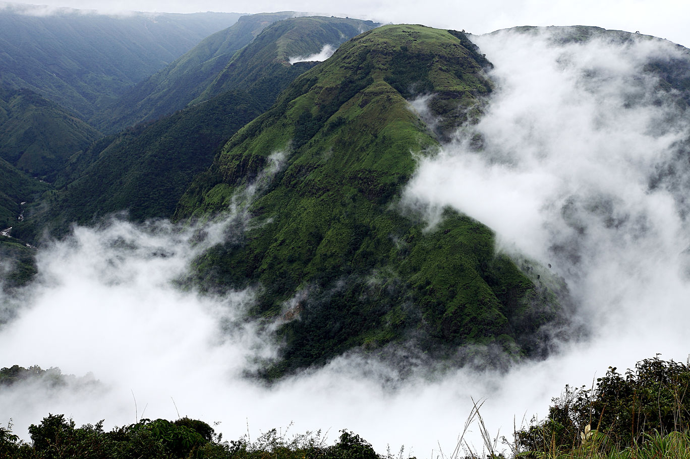

Destination 1 - Yuksom
Located in the Western parts of Sikkim, Yuksom is the origin of several enthralling treks into the Himalayas or the magical Kanchenjunga. The once a capital of Sikkim, this hamlet is more known for its pristine beauty and rustic appeal.
Learn More

Destination 2 - Laitmawsiang
This small village located in Khatarshnong Laitkroh Block of East Khasi Hills, is the perfect hideout for people hungry for isolation in the lap of nature.Known for its lush green landscapes, hills, and unique culture.
Learn More
Destination 3 - Pollachi
40 kms south of Coimbatore, a picturesque small town is one of the least known and unexplored places in South India. A traveller's haven with perfect adventure activities, Pollachi has a great climate throughout the year where you can enjoy refreshing breeze from the Palghat gaps whenever you visit.
Learn More